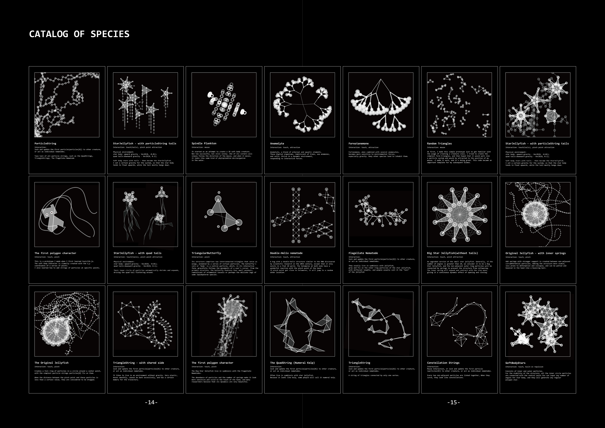
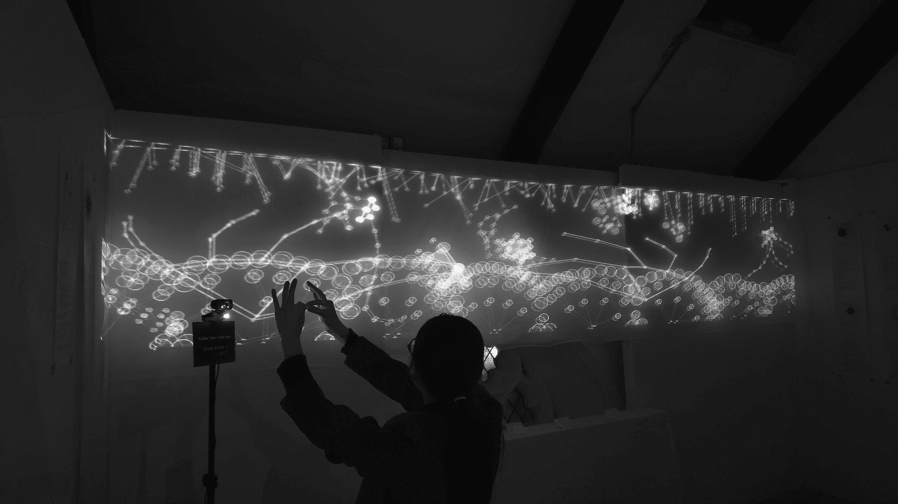
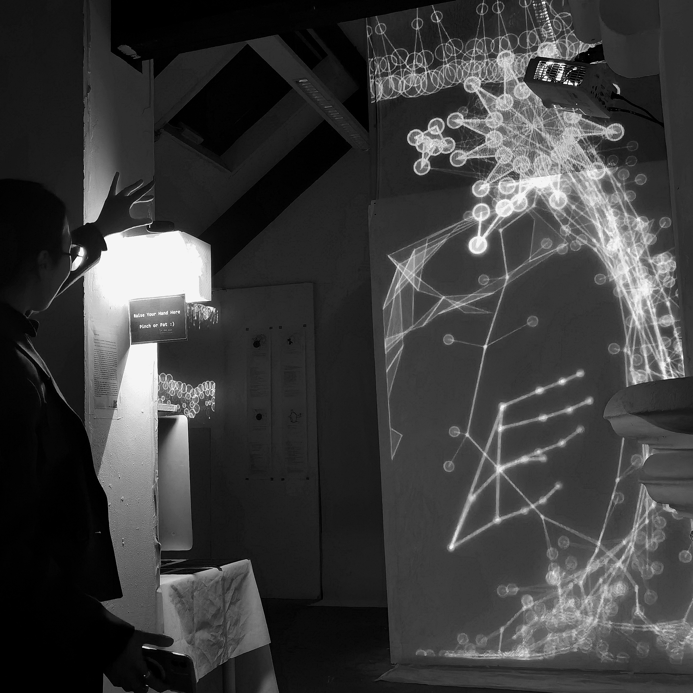
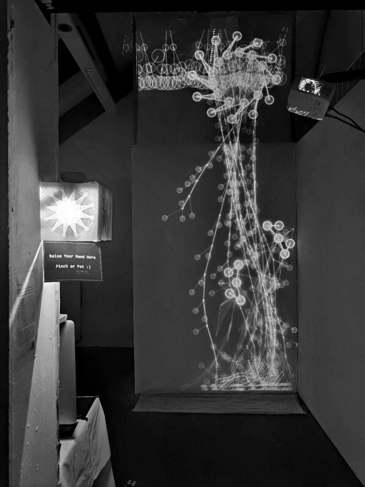
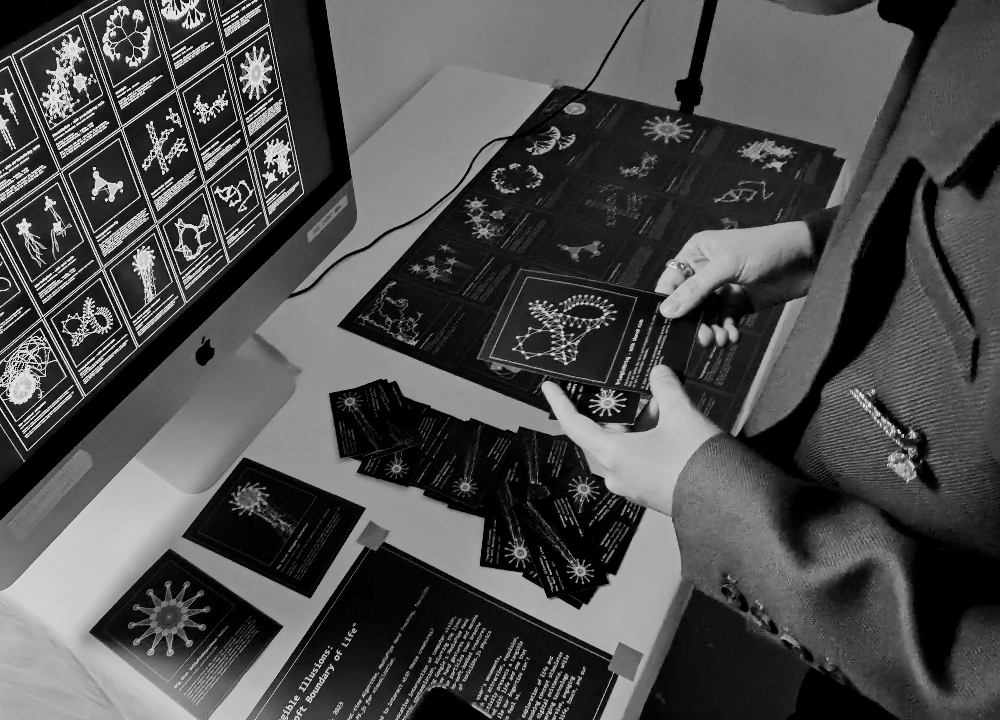

EXHIBITIONS
0:00:36 At V&A museum, Digital Design Week
0:03:36 At Goldsmiths Hatcham Church
0:06:51 At Beijing (3-walls immensive projection)
0:13:52 At Paris, British Embassy in France
Introduction
Would you raise your hand to interact with these creatures?
This project presents an evocative intersection of computer vision, physics simulations, and artistic contemplation, blurring the lines between digital and organic lifeforms. Using Google's MediaPipe Hand technology, the application captures real-time hand gestures and morphs them into an array of dynamic particles. These particles then breathe life into an array of virtual marine organisms—soft-bodied creatures reminiscent of jellyfish—under the governance of toxiclibs.js physics simulations.
Each virtual entity responds uniquely to the user's movements, manifesting diverse interaction patterns such as attraction, repulsion, and particle state alterations. This interactivity presents a tangible sense of softness, a quality often associated with life and one that humans find compelling to touch. However, while our fingertips can't perceive these virtual entities, they seem to feel us.
At its core, the project poses a philosophical exploration of life and the virtual sensation of touch. This thought-provoking concept stimulates viewers to reevaluate the boundaries of life and digital existence, while highlighting the inherent appeal of softness. By merging technology and art, the project invites participants to an immersive, engaging journey of interaction, invoking deep reflections on life, touch, and our relationship with the digital realm.

Mouse interaction creatures prototype
Catalog of Species

On-site Installation


   
Future Prospects
Explore interactions between creatures
In the future, I hope the interactivity in my work extends beyond just human-to-creature interactions (for example, the human hand in this case) to include interactions between creatures themselves. In this current project, the interactions between creatures are limited to some basic attraction and repulsion forces, or one creature acting as a component of another. There are many possibilities for interactions between creatures. Maybe two organisms come together and one eats the other, or one organism parasitizes the other and sheds itself when necessary, etc.
Explore the evolution of creatures
I am interested in exploring the evolution of creatures by introducing 'time' as a critical factor or variable. If I set a total duration ranging from 3 days to several weeks—depending on the length of the exhibition I plan to participate in—I wonder what changes my code-based creatures will undergo each day. What rate of growth will they have? How long will the lifespan of each individual be? Perhaps they will understand natural cell death, similar to human cells; how should I deal with creatures that die? Is it possible for creatures of different forms to exchange, merge, and pass their genetic information to the next generation?
Pursuit of Better Performance
There is another issue with my code: its frameRate is actually not very high, despite my best efforts to optimize it, such as moving the hand-tracking part to be processed by the GPU. When I run both sets of codes in the browser at the same time, their frameRates are about 10 to 20. Thanks to Andy's suggestion, he said that this makes the creatures appear to drift slowly in the sea, and if the frameRate is too high, it might not have this effect. If I want to achieve better performance, perhaps I can try moving it to Processing, or writing it in C++, or even learning shaders, like GLSL, to use the GPU to render images, which would make it very fast.
Acknowledgements
http://haptic-data.com/toxiclibsjs/
https://github.com/hapticdata/toxiclibsjs
http://haptic-data.com/toxiclibsjs/examples/thread
http://haptic-data.com/toxiclibsjs/examples/super-ellipsoid
https://natureofcode.com/book/chapter-5-physics-libraries/
https://thecodingtrain.com/challenges/15-object-oriented-fractal-trees
https://www.youtube.com/watch?v=HhceJ5xxl-4
https://codepen.io/mediapipe/pen/RwGWYJw
https://github.com/google/mediapipe/blob/01fbbd9f6714e47f7b60e844a5c4d93354935e29/docs/solutions/hands.md?plain=1#L345
https://developers.google.com/mediapipe/solutions/vision/hand_landmarker
https://natureofcode.com/book/chapter-9-the-evolution-of-code/